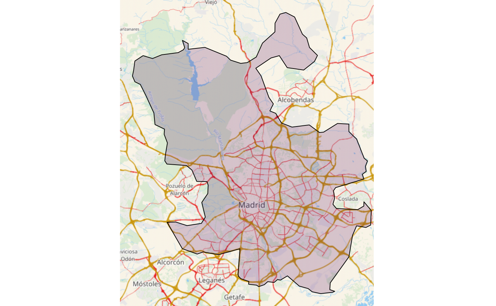

Get static map tiles based on a spatial object. Maps can be fetched from various open map servers.
This function is a implementation of the javascript plugin leaflet-providersESP v1.2.0
esp_getTiles( x, type = "IDErioja", zoom = NULL, crop = TRUE, res = 512, transparent = TRUE, mask = FALSE, update_cache = FALSE, cache_dir = NULL, verbose = FALSE )
| x | An |
|---|---|
| type | Name of the provider. See leaflet.providersESP.df. |
| zoom | the zoom level. If |
| crop | TRUE if results should be cropped to the specified x extent, FALSE otherwise. If x is an sf object with one POINT, crop is set to FALSE. |
| res | Resolution (in pixels) of the final tile. Only valid for WMS. |
| transparent | Logical. Provides transparent background, if supported.
Depends on the selected provider on |
| mask |
|
| update_cache, cache_dir, verbose | See esp_get_nuts |
leaflet-providersESP leaflet plugin, v1.2.0.
A RasterBrick is returned.
Results of esp_getTiles could be plotted using
tilesLayer
For a complete list of providers see leaflet.providersESP.df.
Most WMS/WMTS providers provide tiles on EPSG:3857. In case that the tile
looks deformed, try projecting first x:
x <- sf::st_transform(x,3857)
Tiles are cached under the path cache_dir/[type]
dieghernan, https://github.com/dieghernan/
#>munic <- esp_get_munic(region = "Madrid", munic = c("^Madrid$")) munic <- st_transform(munic, 3857) tile <- esp_getTiles(munic, zoom = 11)#> Warning: Discarded ellps WGS 84 in CRS definition: +proj=merc +a=6378137 +b=6378137 +lat_ts=0 +lon_0=0 +x_0=0 +y_0=0 +k=1 +units=m +nadgrids=@null +wktext +no_defs#> Warning: Discarded datum WGS_1984 in CRS definition#> Warning: Discarded ellps WGS 84 in CRS definition: +proj=merc +a=6378137 +b=6378137 +lat_ts=0 +lon_0=0 +x_0=0 +y_0=0 +k=1 +units=m +nadgrids=@null +wktext +no_defs#> Warning: Discarded datum WGS_1984 in CRS definition#> Warning: Discarded ellps WGS 84 in CRS definition: +proj=merc +a=6378137 +b=6378137 +lat_ts=0 +lon_0=0 +x_0=0 +y_0=0 +k=1 +units=m +nadgrids=@null +wktext +no_defs#> Warning: Discarded datum WGS_1984 in CRS definition#> Warning: Discarded ellps WGS 84 in CRS definition: +proj=merc +a=6378137 +b=6378137 +lat_ts=0 +lon_0=0 +x_0=0 +y_0=0 +k=1 +units=m +nadgrids=@null +wktext +no_defs#> Warning: Discarded datum WGS_1984 in CRS definition#> Warning: Discarded ellps WGS 84 in CRS definition: +proj=merc +a=6378137 +b=6378137 +lat_ts=0 +lon_0=0 +x_0=0 +y_0=0 +k=1 +units=m +nadgrids=@null +wktext +no_defs#> Warning: Discarded datum WGS_1984 in CRS definition#> Warning: Discarded ellps WGS 84 in CRS definition: +proj=merc +a=6378137 +b=6378137 +lat_ts=0 +lon_0=0 +x_0=0 +y_0=0 +k=1 +units=m +nadgrids=@null +wktext +no_defs#> Warning: Discarded datum WGS_1984 in CRS definition#> Warning: Discarded ellps WGS 84 in CRS definition: +proj=merc +a=6378137 +b=6378137 +lat_ts=0 +lon_0=0 +x_0=0 +y_0=0 +k=1 +units=m +nadgrids=@null +wktext +no_defs#> Warning: Discarded datum WGS_1984 in CRS definition#> Warning: Discarded ellps WGS 84 in CRS definition: +proj=merc +a=6378137 +b=6378137 +lat_ts=0 +lon_0=0 +x_0=0 +y_0=0 +k=1 +units=m +nadgrids=@null +wktext +no_defs#> Warning: Discarded datum WGS_1984 in CRS definition#> Warning: Discarded ellps WGS 84 in CRS definition: +proj=merc +a=6378137 +b=6378137 +lat_ts=0 +lon_0=0 +x_0=0 +y_0=0 +k=1 +units=m +nadgrids=@null +wktext +no_defs#> Warning: Discarded datum WGS_1984 in CRS definition#> Warning: Discarded ellps WGS 84 in CRS definition: +proj=merc +a=6378137 +b=6378137 +lat_ts=0 +lon_0=0 +x_0=0 +y_0=0 +k=1 +units=m +nadgrids=@null +wktext +no_defs#> Warning: Discarded datum WGS_1984 in CRS definition#> Warning: Discarded ellps WGS 84 in CRS definition: +proj=merc +a=6378137 +b=6378137 +lat_ts=0 +lon_0=0 +x_0=0 +y_0=0 +k=1 +units=m +nadgrids=@null +wktext +no_defs#> Warning: Discarded datum WGS_1984 in CRS definition#> Warning: Discarded ellps WGS 84 in CRS definition: +proj=merc +a=6378137 +b=6378137 +lat_ts=0 +lon_0=0 +x_0=0 +y_0=0 +k=1 +units=m +nadgrids=@null +wktext +no_defs#> Warning: Discarded datum WGS_1984 in CRS definition#> Warning: Discarded ellps WGS 84 in CRS definition: +proj=merc +a=6378137 +b=6378137 +lat_ts=0 +lon_0=0 +x_0=0 +y_0=0 +k=1 +units=m +nadgrids=@null +wktext +no_defs#> Warning: Discarded datum WGS_1984 in CRS definition#> Warning: input and ouput crs are the same